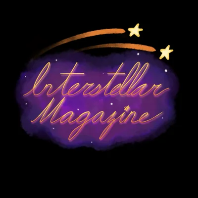

Interstellar × MathEXplained Collab
How Energy Transmission Can Be Optimized for a Future of Solar Power
Explore the physics and optimization behind renewable energy systems.
By: Julia Somlo (I) / Kevin Chen (M)
A student-run magazine that turns the corners of mathematics into applicable stories anyone can read.
Every issue, free to read.

Explore the physics and optimization behind renewable energy systems.
By: Julia Somlo (I) / Kevin Chen (M)
How navigation, observation, and mathematics guide our view of the stars.
By: Yulee Oh (I) / Samairra Malhotra (M)
Modeling, treatment planning, and the mathematics behind modern medicine.
By: Shivali H. Patra (I) / Wenhao Lu (M)
1. What is the Future of AI for Math?
2. The Math of Lights Out
3. September's Epiphany
4. The Wobbly Table Theorem
5. Camera Geometry
6. The Simplex Algorithm
7. Autumn Crossword
1. The Topological Mystery of the Möbius Strip
2. The Ham Sandwich Theorem
3. When 1 = 2: The Paradox of Space Filling Curves
4. Linearity of Expectation
5. The Fundamental Identity of Ramification
6. Back-to-School Crossword
1. How Hyperbolic Geometry is Shown in Nature
2. Sunflowers
3. Ducci Squares
4. Continued Fractions
5. Father's Day Crossword
1. The Narcissists of Number Theory
2. Cops and Robbers
3. Graph Neural Networks
4. Mother's Day Crossword
1. The 37% Rule of Knowing When To Stop
2. Martin Gardner – A Magician in a World of Mathematics
3. The Königsberg Bridge Problem: The Walk That Started Graph Theory
4. Which Math Competitions Have You Done? Poll Results
5. April Crossword
1. Emmy Noether: The Most Influential Woman in Physics and Mathematics
2. Approximating Pi: From Archimedes to Nilakantha
3. The Mathematics of March Breakups
4. The Sleeping Beauty Problem
5. Cricket Crossword
1. A Mathematical Valentine
2. Are All Horses the Same Color?
3. Poll Results: What Are Transcendental Numbers?
4. February Crossword
1. Why Waking Up in the Winter Is So Hard
2. Symmetry in Snowflakes
3. How Partitions Are Solving One of Math's Oldest Problems
4. 2026 Crossword
1. A December Nobel & The Gift of Stability
2. Partitions: From Euler to Ramanujan
3. Winter Crossword
1. Four Colors Suffice: Inside the Long History of the Four Color Theorem
2. The Sequence From Rabbits to Markets
3. The Fractals of Fall
4. November Crossword
1. The Benford Hierarchy: Why Your Data Prefers a '1'
2. The October That Solved Fermat
3. The Pumpkin Problem
4. October Crossword
1. PID Control: The Math that Keeps Machines Steady
2. The Collatz Conjecture: A Simple and Impossible Problem
3. September Crossword
1. The Banach-Tarski Paradox
2. Fair Cake Cutting
3. Polynomial Irreducibility
4. The Central Limit Theorem
5. Gödel's Incompleteness Theorems: The Limits of Logic
6. Flight Paths
7. The Cayley-Bacharach Theorem, Groups, and Elliptic Curves
8. N. Bourbaki: The Nonexistent Man Who Changed Math
9. Math Behind Mogging
1. The Linear Algebra Behind Search Results
2. Scientific Applications of Knot Theory
3. Simple Question, Enduring Mystery
4. An Introduction to Galton-Watson Processes
1. Primality Tests
2. Simpson's Paradox
3. Approximations
1. Sports Betting
2. Birthday Paradox
3. May Mathematicians
4. Ulam Spiral
5. The Cubic Formula's Surprising Past
1. Fibonacci in Nature
2. Math in Nature: Fractals
3. Deriving Trigonometry Values with a Stick
4. Spring Math Crossword
1. Exploring π's Legacy Through the Ages
2. π and Philly Cheesesteak
3. Mathematical Beauties within Chess
4. Pi Day Math Crossword
1. Is Punxsutawney Phil Actually a Fraud?
2. Discovering Nostalgia in Mathematics
3. Math Pick-up Lines
1. Math's Most Beautiful Equation Explained
2. 2025 - a Year of Interesting Properties
3. New Year's Math Crossword
1. Monte Carlo Fallacy - the Death of Inexperienced Gamblers
2. Book Review - A Manga Guide to Calculus
3. Christmas Math Crossword
1. Voting Theory: the Impossibility of Perfection
2. Mathematical History: November Edition
3. Nim: The Most Complex Simple Game
4. BMT 2024 - the in-Person Experience
5. Thanksgiving Math Crossword
1. Achieving Musical Harmony with Math
2. Largest Prime Number Discovered
3. The Math Behind Origami
4. The Culmination of Art and Math: A Golden Connection
5. Halloween Math Crossword
1. Notice Deceptive Statistics
2. How Many Holes Does a Straw Have?
3. Surprising Connections Between Probabilistic Theory and Number Theory
4. Sperner's Lemma: Achieving Rental Harmony
1. Should I Take Calc AB or Calc BC?
2. Pursuing Math into College
3. Math and Synesthesia
4. APMO 2024 Results Released!
5. Is Mathematics an Art Form?
1. Mathletes From Over 100 Nations Meet For the 65th IMO
2. Just Under 100 Days Until the 2024 AMC 10/12
No issues match that search. Please try a different query.